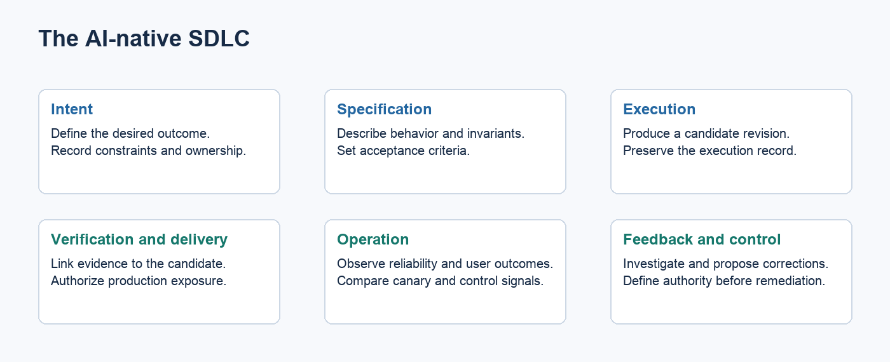
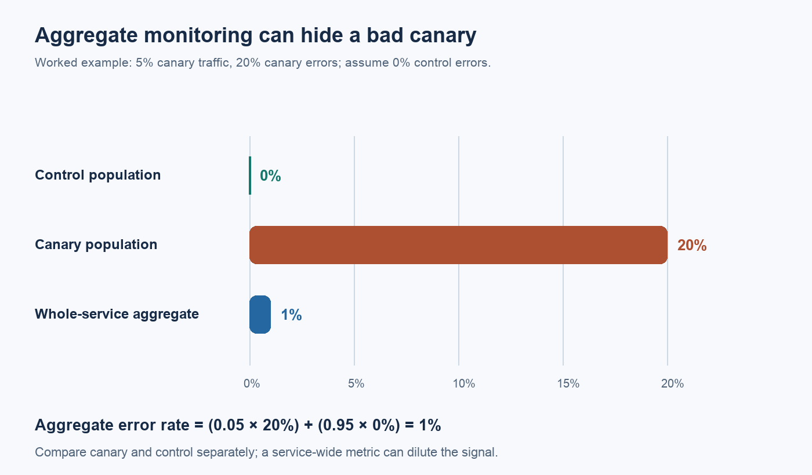
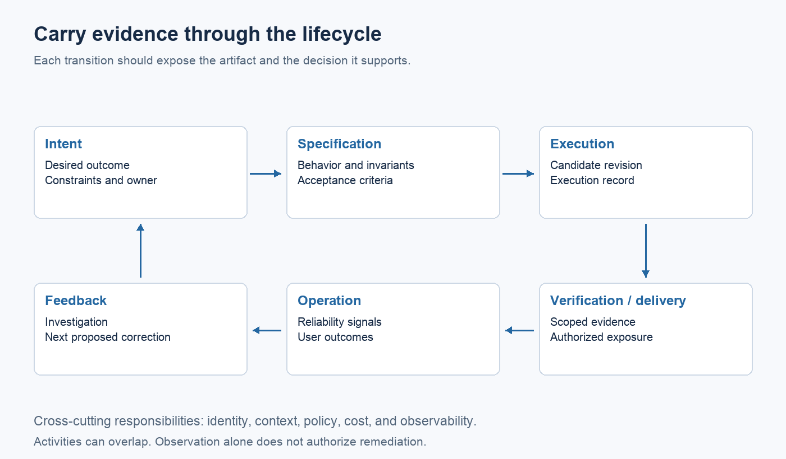

The AI-native SDLC: what happens after the agent writes the code?

Key points
- Treat agent output as a candidate change. Readiness depends on evidence tied to the requirements and revision.
- Give each task a bounded environment, explicit permissions, and a route for failure.
- Keep decisions about ambiguous requirements separate from implementation.
- Evaluate a release against its control population. Aggregate metrics can hide a bad canary.
- Measure the effort through delivery and maintenance, including failed attempts and human intervention.
Consider a hypothetical task: reduce failed account-recovery attempts. A coding agent changes the recovery flow, adds tests, and opens a pull request. CI passes.
What should happen next?
The tests might establish that the new flow works for the cases the agent chose. They might miss a security constraint. The implementation could also solve the wrong problem: perhaps customers fail because recovery messages arrive late, rather than because the screen is confusing.
The patch is ready for evaluation. Whether it should reach customers depends on decisions the coding task has not resolved.
That is the design problem for an AI-native SDLC. The workflow has to carry enough information from the original request to the running system that someone can explain why a change was accepted, and act when it behaves differently than expected.
Start with the decision the code is supposed to serve
“Improve account recovery” leaves too much room for interpretation. It mixes a desired outcome with several possible causes and interventions.
For this example, assume an investigation has identified a confusing recovery step. The task now needs a narrower definition: change that step, preserve the existing authentication guarantees, and evaluate whether customers complete recovery more successfully.
Before execution, resolve the questions that affect acceptance:
- Which behavior can change, and which security properties must remain intact?
- What would demonstrate an improvement for the affected customers?
- Who decides when convenience and account protection conflict?
An agent can identify gaps and suggest alternatives. Those suggestions still need a decision owner. Otherwise, the implementation becomes the place where unresolved product policy gets decided by default.
Keep the requirements versioned with the change. If the team changes an acceptance criterion halfway through, the existing test results need review. Evidence for an earlier requirement may no longer support the current decision.
Define the execution contract
Once the task is clear, the executor needs a usable environment. For a coding agent, that means a repository revision, relevant context, working commands, and permission boundaries.
A useful task record would contain the following:
| Input or output | What it provides | | --- | --- | | Task and requirements version | The behavior being requested | | Base revision and dependencies | The starting point for the change | | Allowed tools and permissions | The actions the executor can take | | Candidate revision | The artifact to evaluate | | Check results and run record | What was attempted and observed | | Unresolved issues | What needs another decision or investigation |
This contract should also work when a human or a deterministic script performs the task. Their execution methods differ, but the next stage still needs to inspect the result.
Failure needs its own route. If the test environment cannot start, sending the agent back to edit application code may waste time or introduce an unrelated change. Record the setup failure and route it to the environment owner. If an acceptance test fails, a bounded repair attempt may be appropriate. If the requirement itself is ambiguous, stop and return the question to its owner.
Define retry limits before the run. Preserve failed attempts in the task history and cost accounting. A candidate produced after several failed runs has consumed more than the cost of its final successful attempt.
Review the claim each check supports
For the recovery change, verification needs to connect requirements to evidence. A build establishes that the candidate can be built in the configured environment. A test for an expired recovery link covers that scenario. Neither establishes that the whole recovery experience is better.
SWE-bench illustrates the value of executable evaluation: it assesses repository issue-resolution patches using tests. Its evaluation boundary is specific. Passing such an evaluation does not settle every question about deployment or user outcomes. Princeton's SWE-bench explanation
One failure deserves particular attention: the agent can misunderstand the requirement and write a test that agrees with its implementation. Both pass together.
For consequential behavior, derive acceptance checks from the requirement before implementation, or have another reviewer examine whether the tests actually express it. Keep gaps visible. If a security property depends on a separate review, a green unit-test suite should not close that requirement.
The evidence record should identify the candidate revision, the checks performed, their results, and the questions still open. If the patch changes afterward, decide which checks must run again.
Preserve useful controls
Tickets, pull requests, and staging environments have different jobs. A ticket can record intent. A pull request can expose a diff and preserve approval. Staging can exercise integrations before production exposure.
An AI-native workflow can change these mechanisms. First identify the responsibility each one serves, then design its replacement. Removing a pull request is a workflow decision; removing independent review and traceability is a change in control.
NIST's Secure Software Development Framework describes practices that can be integrated into different development lifecycles. That flexibility is useful here: redesign the process while retaining the security responsibilities it must satisfy. NIST SSDF version 1.1
Check the release where the change is running
The recovery flow can pass preproduction checks and still fail under actual traffic. A dependency may respond differently. A client version may exercise a path the tests missed.
Where the service supports it, expose a limited population to the candidate and compare it with a control before widening the release. Google's canarying guidance describes this approach and the monitoring needed to evaluate it. Canarying releases
The comparison matters. Suppose a canary receives 5% of traffic and fails 20% of its requests, while the control has no errors. The service-wide error rate is only 1%:
(5% × 20%) + (95% × 0%) = 1%

*Worked example based on Google SRE's monitoring discussion; these are illustrative values. Figure notes.*
An aggregate dashboard can make the candidate look much healthier than it is. Evaluate the population receiving the change, using signals and thresholds chosen for that service.
For account recovery, operational and product measures answer different questions. Request errors show whether the service is failing. Recovery completion helps assess whether the change serves its purpose. Security review remains necessary even if both measures look favorable.
Choose a recovery action before deployment. Disabling a new screen may be straightforward; reversing a change that has already written incompatible data may require a different plan. The release mechanism needs to match the consequences of the change.
Observation does not authorize a repair
A production signal should open an investigation. It should not give an agent unrestricted permission to modify the service.
For the recovery example, a rise in failures could come from the patch, a messaging dependency, or a change in traffic. The investigation needs the deployed revision, relevant telemetry, and recent operational events. Give the agent access to the information it needs within existing data boundaries.
Remediation authority should be explicit. Pausing an established rollout under a defined policy is different from devising and deploying a new authentication change during an incident.
Human intervention also needs preparation. An engineer asked to resolve a failure needs the task history and evidence, along with a way to stop execution. Bainbridge's *Ironies of Automation* examines the difficult role left to operators when automated systems encounter abnormal conditions. It is useful context for designing this handoff. Automatica

The lifecycle diagram describes responsibilities. Activities can overlap, and a failed check can send work back to specification. The point of the loop is to preserve the connection between the requested outcome, the change, and what happened after release.
Try the design on one recurring workflow
Start with a class of work whose boundaries the team understands. Record the current effort from request through release, then compare the redesigned process on representative tasks.
Track specification work, execution cost, review and rework, waiting time, and deployment effort. Follow defects and maintenance beyond the initial release. Keep failed runs and interventions in the totals.
The complete lifecycle proposed here has not been shown by these sources to produce meaningful productivity gains or positive ROI. Faster implementation can help, but its value depends on the remaining work and the quality of the result.
Before expanding autonomy, examine one completed change. Can the team recover its requirements, reproduce the relevant checks, identify who authorized exposure, and explain how production evidence affected the next decision? Fix the missing links before increasing the volume of agent work.
---
Research and scope
This article proposes a workflow design. The account-recovery scenario is hypothetical. Research and practitioner guidance support specific parts of the discussion, rather than validating the whole architecture. See References.md for source notes and evidence limits.